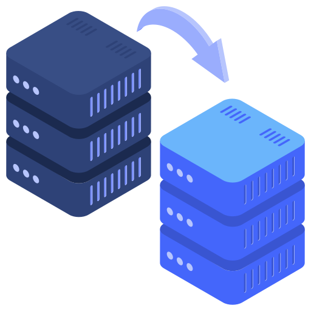

At Enterprise Cloud Solutions Group LLC, we deliver end‑to‑end migration projects—server, cloud, software, email, and files—executed with proven methodology, tight risk control, and clear communication. Our goal is simple: move what matters, protect your data, and keep your users productive throughout the transition.
Initiate → Assess → Plan → Pilot → Migrate → Validate → Stabilize

Our Migration Services ensure a smooth transition to modern platforms—whether you’re moving servers, cloud workloads, software applications, emails, or files. We handle every stage of the process with precision, protecting your data, minimizing downtime, and delivering a clean, stable environment your team can start using immediately. With expert planning, proven methodology, and end‑to‑end support, we make complex migrations simple, reliable, and worry‑free.
Business‑first planning: we align cutovers to your operational calendar to minimize downtime.
Predictable execution: standardized runbooks, pilots, and rehearsals reduce surprises.
Security by design: identity, access, and encryption are built into every step.
User experience: communications, quick guides, and floor support ensure adoption.
Measured outcomes: success criteria defined up front and validated post‑cutover.
Serving Connecticut organizations that need a partner who can plan, execute, and own the results—start to finish.
Modernize or refresh your infrastructure without disrupting the business.
What We Do
Discovery & mapping of workloads, dependencies, and performance baselines
Target design for on‑prem, hybrid, or cloud landing zones
Phased migration (workload groups, maintenance windows, rollback plans)
Data protection (snapshots, replicas, point‑in‑time restore options)
Post‑cutover validation (services, jobs, integrations, monitoring)
Outcomes
Reduced downtime and cleaner switchover
Right‑sized resources for cost and performance
Documented environment with updated runbooks.
Move from physical or legacy platforms to a secure, scalable cloud foundation.
What We Do
Readiness assessment (identity, networking, security, costs)
Landing zone & governance (naming, RBAC, policies, tagging)
Data and workload migration (lift‑and‑shift or refactor, as appropriate)
Performance tuning & cost optimization (rightsizing, schedules, reservations)
Operational handoff with monitoring, backup, and access controls
Outcomes
Faster delivery of services and improved resilience
Predictable monthly costs with visibility and control
Stronger security posture aligned to best practices.
Migrate critical business apps (ERP, accounting, EHR/EMR, workflow tools) with care.
What We Do
Vendor coordination (versions, prerequisites, licensing)
Data model mapping & integrity checks (schema, constraints, unique keys)
Integration review (APIs, reports, automations)
Parallel runs & acceptance testing with business owners
Change management & training for end users and admins
Outcomes
Verified data integrity and preserved history
Minimal disruption to billing, reporting, and daily operations
Clear documentation for support and future upgrades.
Zero‑drama migrations to modern collaboration.
What We Do
Email: Exchange on‑prem/IMAP/Google → Exchange Online (coexistence or cutover)
Files: File servers/NAS/Google/Dropbox → SharePoint & OneDrive
Identity & domains: authentication, DNS, hybrid if needed
Content mapping: permissions, versions, metadata, sharing links
End‑user experience: Outlook profile handling, mobile re‑enrollment, quick guides
Outcomes
Clean, secure collaboration with versioning and search
Reduced shadow IT and better data governance
Smooth user transition with communications and helpdesk coverage
Initiate & Define Success
Stakeholder alignment, scope, risks, success criteria, and timeline.
Assess & Discover
Inventory, dependencies, integrations, data quality, and readiness gaps.
Plan & Design
Architecture, sequencing, cutover windows, rollback, security controls, and comms plan.
Pilot & Rehearse
Validate tools, throughput, mappings, and user experience with a representative subset.
Migrate & Cut Over
Execute per runbook with real‑time monitoring and issue triage.
Validate & Stabilize
Acceptance testing, performance tuning, bug fixes, and user hypercare.
Handover & Optimize
Documentation, training, and a roadmap for ongoing improvements.
Backup/DR ready before any move (snapshots, exports, or replicas).
Change freeze windows for upstream/downstream systems.
Rollback procedures documented and rehearsed.
Security controls: MFA, conditional access, least privilege, encryption in transit/at rest.
Compliance support for audit trails, retention, and legal hold (when applicable).
Migration runbook & schedule
Inventory & dependency map
Cutover & rollback plan
Comms kit (emails, FAQs, end‑user guides)
Post‑migration validation report (against success criteria)
Updated documentation (diagrams, settings, credentials escrowed securely).
Small (≤50 users / ≤1 TB / few apps): 1–2 weeks
Mid‑size (50–250 / 1–5 TB / several apps): 2–5 weeks
Large/Complex (multi‑site, >5 TB, strict change windows): custom project plan
We always confirm timelines after discovery and pilot throughput testing.
Will our users lose access during migration?
We plan cutovers during off‑hours and use coexistence or staged moves where possible to keep the business running.
How do you protect our data?
We enable backups/snapshots prior to any move, encrypt data in transit/at rest, and test restores during pilot.
Can you coordinate with our software vendors?
Yes—versioning, licensing, prerequisites, and post‑cutover support are part of our standard approach.
Do you offer after‑hours support for go‑live?
Absolutely. We staff go‑lives and provide hypercare for a stable transition.
Make the switch seamless with Enterprise Cloud Solutions Group LLC.
We handle planning, execution, and stabilization—so your team stays focused on the work that matters.